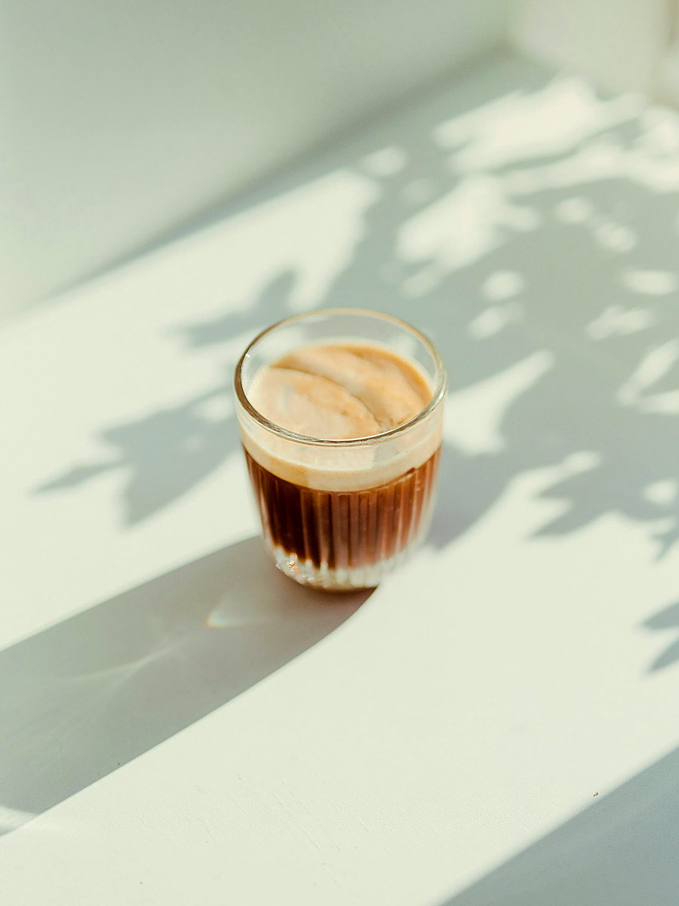
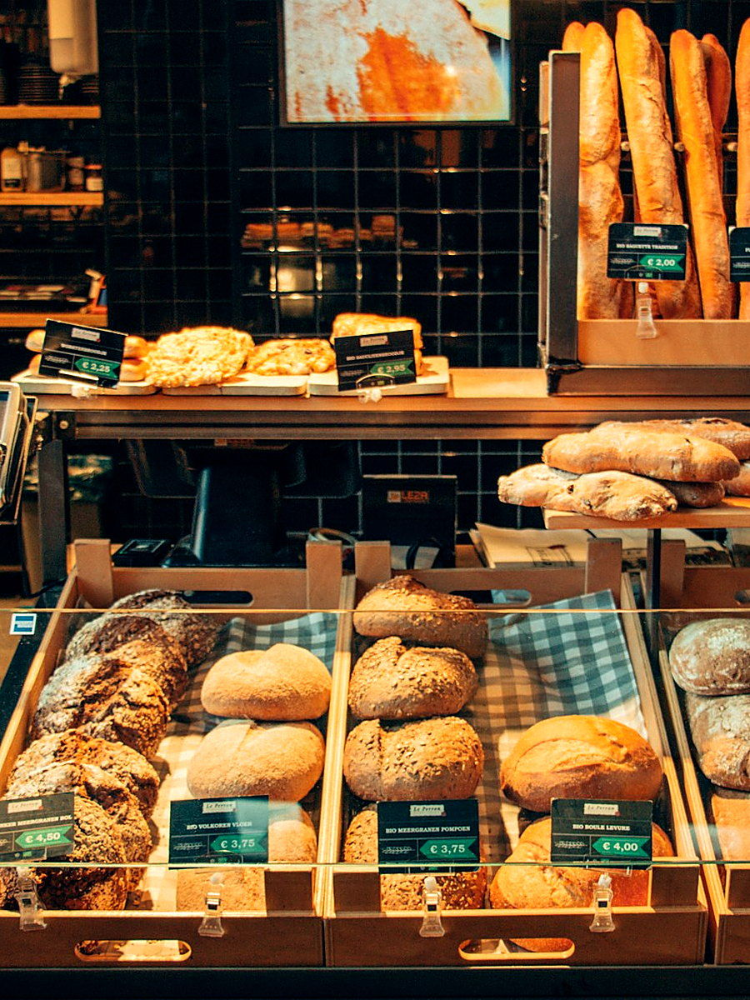
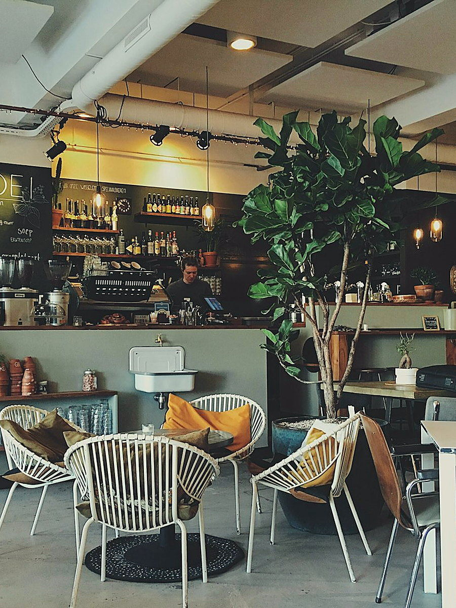

Odunpazarı ❋ Eskişehir
Her fincan, bir yolculuk
Üç kıtadan dönüşümlü tek origin çekirdekler, küçük parti kavrum ve özenli demleme. Odunpazarı'nın taş sokaklarında nitelikli kahve durağı.
02 ❋ Fincana Giden Yol
Yeşil çekirdekten fincana
Her adımı elle takip ediyoruz. Amacımız hızlı bir servis değil; çekirdeğin hakkını veren bir fincan.
-
01
Çekirdek Seçimi
Üç kıtadan dönüşümlü, tek origin yeşil çekirdekler; 800'den fazla tadım profili arasından seçilir.
-
02
Küçük Parti Kavrum
Çekirdekler küçük partiler hâlinde, içime yakın ve profiline göre kavrulur.
-
03
Özenli Demleme
Her yönteme göre öğütüm, doz ve su sıcaklığı; baristanın elinde ölçülerek hazırlanır.
-
04
Servis
Fincan sıcakken, çekirdeğin kökeni ve tadım notlarıyla birlikte servis edilir.
03 ❋ Galeri
Bardan ve mekândan kareler
Espressodan soğuk demlemeye, taze pastaneden Odunpazarı'ndaki mekânımıza. Aşağıdaki görseller temsilîdir; güncel kareleri Instagram'da paylaşıyoruz.

01 EspressoBar Instagram'da gör → 02 Soğuk
Demleme Instagram'da gör →

03 TazePastane Instagram'da gör →

04 Mekân Instagram'da gör →❋ Bilgi & Rezervasyon
Günün çekirdeği, akademi tarihleri ve masa başı demleme rezervasyonu için WhatsApp'tan yazabilirsiniz.
04 ❋ Ekip
Bar arkasında
Kokopelli Coffee Co., Odunpazarı'nda nitelikli kahveye odaklanan küçük bir ekip. Çekirdek seçiminden servise kadar her adımda aynı özen.
Barista Ekibi
Espresso · Filtre · Soğuk Demleme
Espresso bar ve filtre demlemede deneyimli; her fincanı doz ve zamanla ölçerek hazırlayan kadro.
Kavurma & Pastane
Kavrum · Taze Pastane · Akademi
Küçük parti kavrum, günlük taze pastane üretimi ve kahve akademisi eğitimlerini yürüten ekip.
05 ❋ Konum
Odunpazarı'nda, İstiklal'de
İstiklal Mah. Sökmen Sk. No:7/B, Odunpazarı / Eskişehir
Odunpazarı / Eskişehir
❋ Neden Kokopelli
Eskişehir'in nitelikli kahve durağı
800+
tadım profili; üç kıtadan dönüşümlü tek origin çekirdekler arasından seçilir
Günün çekirdeğini sor →Odunpazarı'nın taş sokaklarında, çekirdeği küçük partiler hâlinde kavuruyor; her fincanı doz, öğütüm ve zamanla ölçerek hazırlıyoruz.
Pastanemiz her gün taze hazırlanır ve aynı gün tüketilir. İsteyen misafirlerimiz için rezervasyonla masa başı demleme ve kahve akademisi eğitimleri sunuyoruz.
Instagram'da İncele06 ❋ SSS
Sık sorulan sorular
Rezervasyon gerekiyor mu?
Genel oturuşlar için rezervasyon gerekmiyor. Masa başı demleme ve kahve akademisi için WhatsApp'tan yer ayırtmanız yeterli.
Dizüstü bilgisayarla çalışmak mümkün mü?
Evet, çalışmaya uygun sakin köşelerimiz var. Yoğun saatlerde masayı paylaşmanızı rica edebiliriz.
Bitkisel süt seçenekleri var mı?
Sütlü içeceklerimizi bitkisel süt alternatifleriyle de hazırlıyoruz; güncel seçenekler için baristamıza sorabilirsiniz.
Çekirdeklerinizi paket olarak alabilir miyim?
Evet. Dönüşümlü tek origin çekirdeklerimizi çekirdek hâlde veya öğütülmüş olarak paketliyoruz.
Kahve akademisi kimler için uygun?
Evinde daha iyi demlemek isteyenlerden profesyonel barista adaylarına kadar herkes için temel ve ileri seviye programlarımız var.
❋ Rezervasyon & İletişim
Bir sonraki fincan için yazın
Formu doldurun; bilgileriniz hazır bir mesaj olarak WhatsApp'a taşınsın. Masa başı demleme, akademi kaydı veya çekirdek siparişi — en kısa sürede dönüş yapalım.
0552 943 24 16 telefon & WhatsApp aynı numara